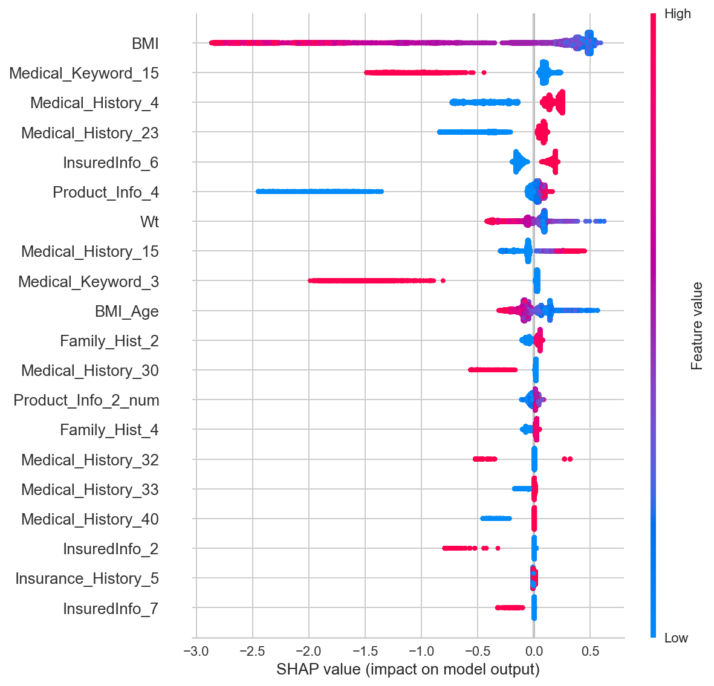
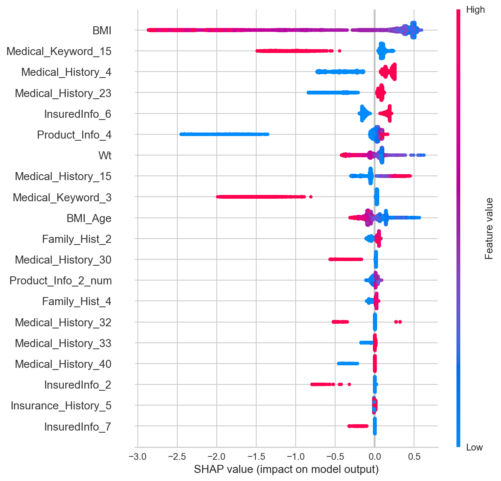

Data
Here Response 8 has the highest counts, I assume it the quote that is granted.
Records: 60k
Features: 127
Target: Response (has 8 categories, 1-8)
Features:
1 Misc : Age ht wt bmi 4
2 Product Info : Product_Info_1 to 7 7
3 Employment Info : Employment_Info_1 to 6 6
4 Insured Info : InsuredInfo_1 to 7 7
5 Insurance History: Insurance_History_1 to 9 9
6 Family History : Family_Hist_1 to 5 5
7 Medical History : Medical_History_1 to 41 41
8 Medical Keywords : Medical_Keyword_1 to 48 48
Target: Response 1
ID : ID 1
---------------------------------------------------
Total Features: 127
Dependent Variable: 1 (Response)Quadratic weighted kappa is rank based metric used for multiclass classification. It has the minimum value 0 (random guess) and maximum value 1 (total agreement).
from sklearn import metrics
score = metrics.cohen_kappa_score(ytest,ypreds,weights='quadratic')
I have tried various machine learning models for this project. The results are presented below.
Linear Regression
Weighted quadratic kappa = 0.569630318923444Xgboost Classifier softprob
objective = "multi:softprob"
Cleaning eval_metric kappa
simple default 0.5377897181694622
detailed default 0.5438646999324421
simple custom 0.5530053047703208
detailed custom 0.5407784634778012
Xgboost poission regressor
objective = "count:poisson"
Model TrainKappa TestKappa
0 xgb reg 0.669651 0.603765
1 xgb reg + offset 0.720368 0.649496
2 xgb poisson 0.682188 0.609387
3 xgb poisson + offset 0.735050 0.655627
Xgboost poisson regressor ensemble voting
Model TrainKappa TestKappa
0 xgb reg 0.669651 0.603765
1 xgb reg + offset 0.720368 0.649496
2 xgb poisson 0.682188 0.609387
3 xgb poisson + offset 0.735050 0.655627
4 ensemble 0.623919 0.593312
5 ensemble + offset 0.683268 0.644076 
 
